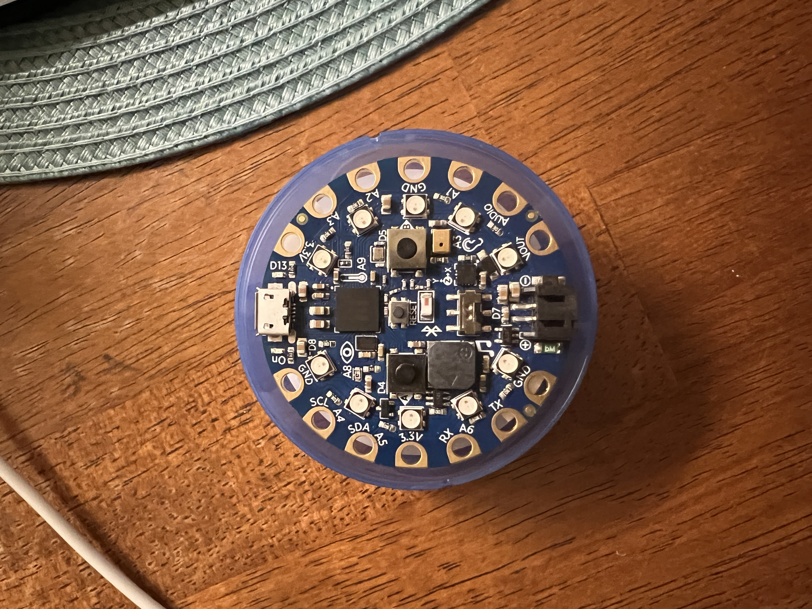

<html class ="projectthree"></html>

<link rel="stylesheet" href="website.css">
<h1><b>Physical Computing Project</b></h1>
<p><b>About the Project: For this project, I created a crappy arc reactor. If you have ever seen the Iron Man movies, you will know that Tony Stark has an arc reactor with an AI in his chest that helps him by answering questions and performing tasks. I wanted to explore this concept, but instead of making a helpful AI, I wanted to see if I could make one that is hindering, unhelpful, and annoying to the user. The project also explores the idea of what artificial intelligence can be, but also asks the question if it should.</b>  </p>

<p><b>Audio Files: https://drive.google.com/drive/folders/12FqPDxkEpSwmPbMN3BFbYrNHi85v3k-7?usp=share_link</b>  </p>


<div class="boo">
    
    </div>
    
    <div class="boo2">
        
    </div>
    
    <div class="proj3">
        <p><b>Demonstration:</b>
        <video width="600" height="340"  controls>
            <source src="proj3vid.mp4" type="video/mp4">
            <source src="movie.ogg" type="video/ogg">
          Your browser does not support the video tag.
          </video>
        </div>